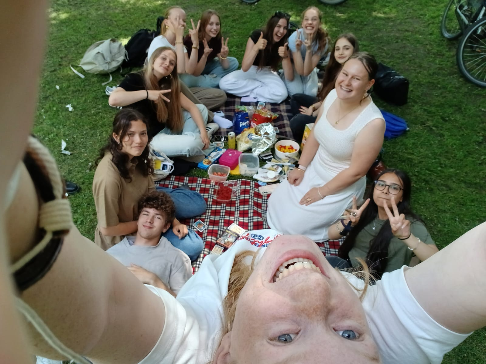
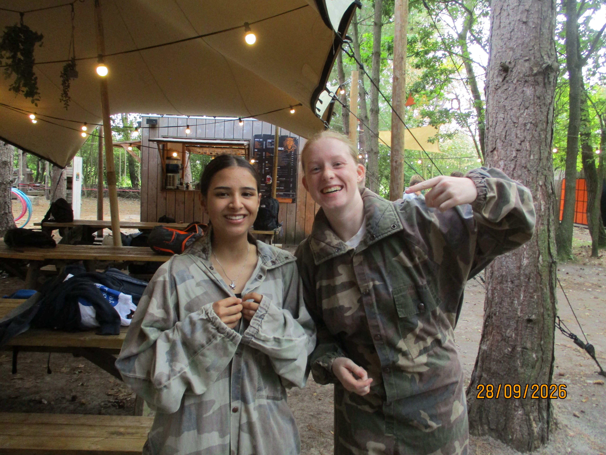

Nienke Zantingh
Hoi ik ben Nienke,
ik ben 15 jaar oud en zit in VWO 4 op het Augustinus.
Ik heb veel hobby's waaronder sporten en muziek.
Ook houd ik heel erg van musical en toneel, ik heb een paar jaar geleden ook in Leve de harmonie gespeeld,
dit is een toneelstuk door de westerkwartiermakers.
Ik woon al heel mijn leven in zuidhorn.
Mijn gezin bestaat uit mijn vader, moeder en mijn broertje. Ook heb ik 2 katten en vissen.

